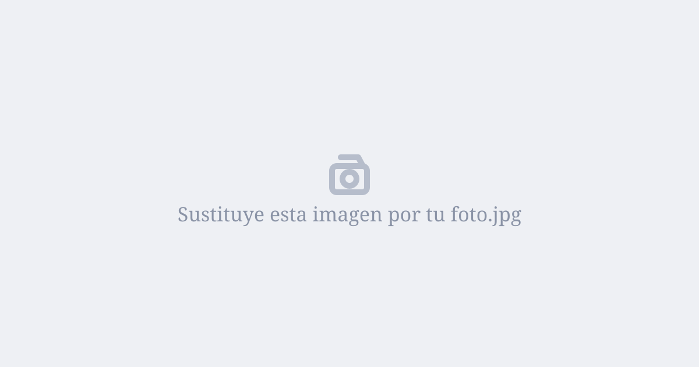

1. Desarrollo de los acontecimientos
Párrafo 1 del reportaje.
2. Declaraciones exclusivas
Párrafo 2 con testimonios de compañeros o del profesor.
"Frase mítica dicha en mitad de la clase que resume toda la situación."
Aquí va un resumen cómico o gancho de la noticia.

Párrafo 1 del reportaje.
Párrafo 2 con testimonios de compañeros o del profesor.
"Frase mítica dicha en mitad de la clase que resume toda la situación."
Un detalle curioso que merezca la pena destacar dentro del reportaje.